[Documentation Home]
[Installation Home]
Alphalinc Software Development Environment (ASDE) - Caché namespace configuration
- Right click on the Caché cube and choose the Configuration Manager item.
|
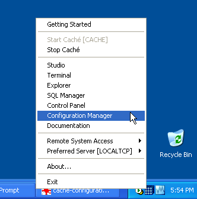
Figure 1 - start Caché configuration manager
|
- Go to the Namespaces tab and click on the Add button.
|
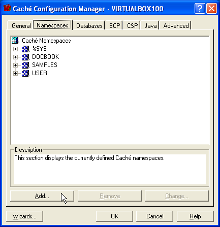
Figure 2 - add a new namespace
|
- On the Namespace Wizard, click on the button Define a New Database.
|
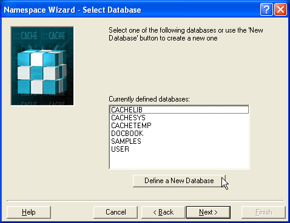
Figure 3 - define a new databse
|
- Enter the same project name in the Database field. For this example, it is
AlphalincA
|
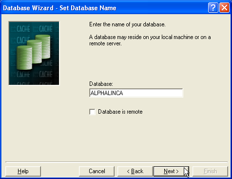
Figure 4 - use the name of the project in the database field
|
- In the Choose Local Directory dialog, specify the path to the database that was created during
the Create Deployment directories step.
For this example, it will be c:\Alphalinc\AlphalincA\database.
|
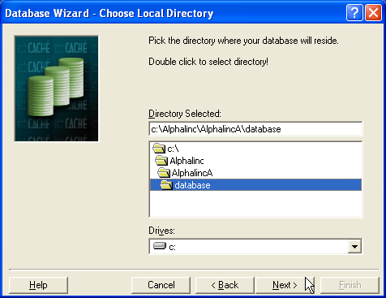
Figure 5 - location for the new CACHE.DAT for AlphalincA
|
- Choose the smallest value allowed and click on the Finish button. Note:
it is advisable to get an initial CACHE.DAT file for the project that is under source control.
The person who performed the namespace migration should make it available.
|
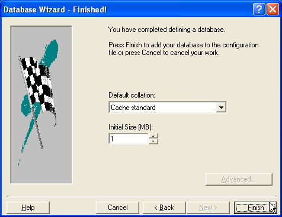
Figure 5 - finish the database definition
|
- Click on the Finish button again to finish the namespace definition wizard.
|
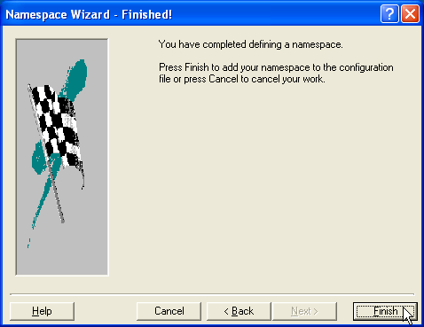
Figure 6 - finish the namespace definition wizard
|
- Back on the Caché Configuration Manager window, go to the CSP tab and
expand (click on the + sign) the Applications Node and also the recently created
namespace node (AlphalincA in this example). Select the entry named Caché
Physical Path and click on the Change button.
|
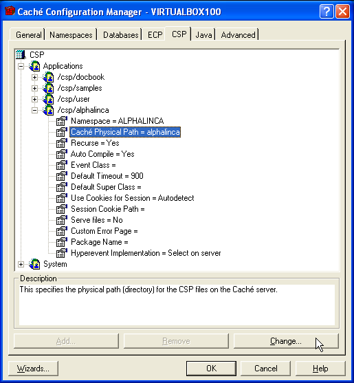
Figure 7 - change the CSP physical path
|
- Specify the path to the directory that will hold the deployed csp files.
If needed, take a look at the
Create Deployment directories step.
|
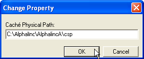
Figure 8 - inform the path to the CSP deployment directory
|
- The Jasper reports used by Alphalinc require the support for
extrinsic function calls within SQL to be enabled. Click on the Advanced
tab of the Caché Configuration Manager window. Locate the item SQL and expand it.
|
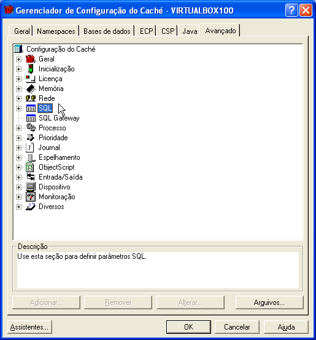
Figure 9 - expand SQL items in the Advanced tab
|
- Scroll down to the item named Allow Extrinsic Functions in SQL Statements.
Then, make sure the value is changed to YES.
|
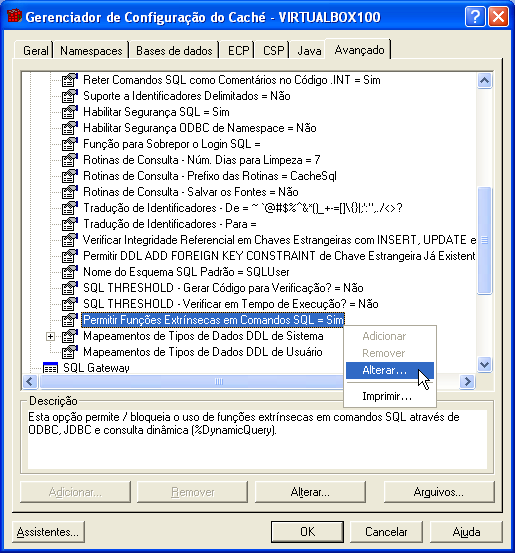
Figure 10 - save changes
|
- Click on the Ok button of the Caché Configuration Manager window to
save all changes and close that application.
|
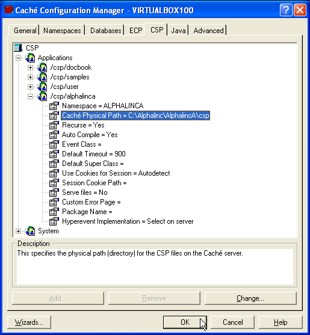
Figure 11 - save changes
|
|
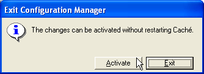
Figure 12 - apply changes
|
Please go back to the installation document, and continue at the
Configure project step.
This document is the file projectDirectory/Implementation/docs/installation/cache-configuration.html
Please feel free to make corrections and commit it to the repository.